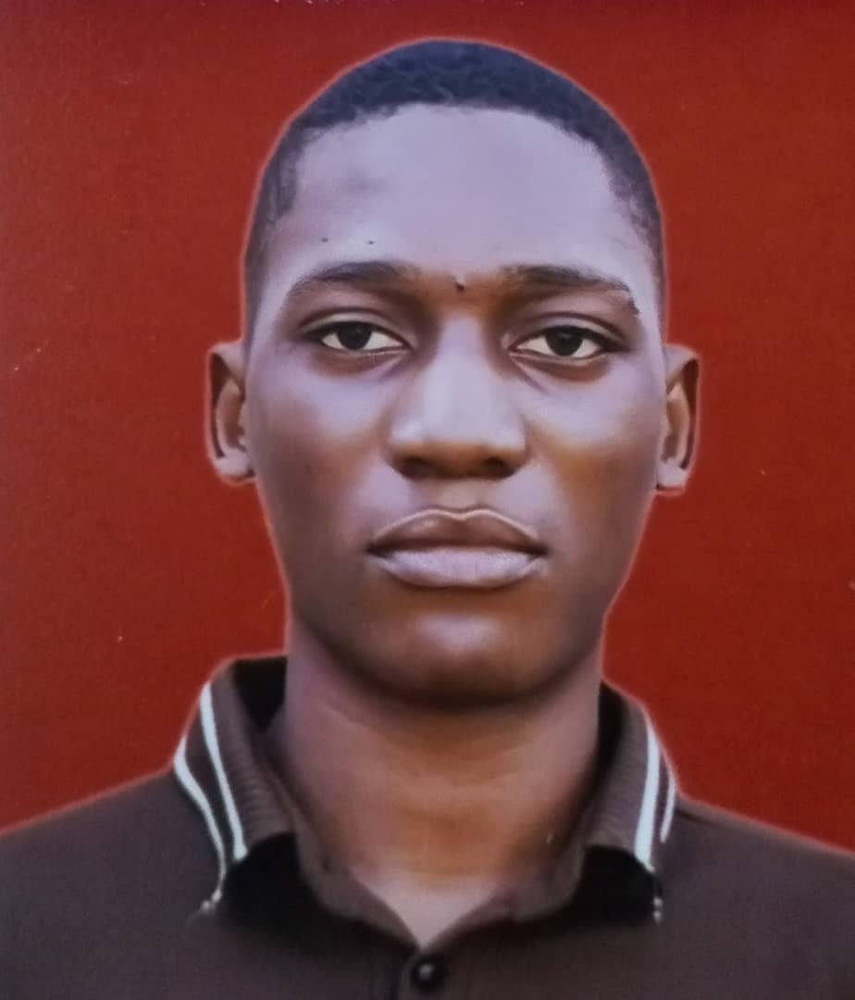

A passionate student focusing on Computer Science [Web Development].
View My WorkI'm an aspiring Front-end Developer with a passion for creating intuitive and visually appealing user interfaces. I am currently pursuing a degree in Computer Science at the Federal University of Technology Minna, Niger State, where I've developed strong foundational skills in web development, UI/UX design, and full-stack technologies.
Interests & Passions: Beyond coding, I'm passionate about music, gaming, and exploring innovative design patterns. I love collaborating on projects that challenge me to learn and grow as a developer.
AUD Primary School
Sueija,Niger State | Completed 2018
Status: Graduated
Greater Tomorrow international School
Suleija Niger State | Completed 2025
Status: Graduated
Federal University of Technology Minna (FUTMINNA)
B.Sc. Computer Science | Expected Graduation: 2031
Focus: Front-end Development, UI/UX Design, Web Technologies
Get in touch with me!
Email: musaferanmi@gmail.com
Phone: +234 707 239 9262
Facebook: Musa OluwaFeranmi
LinkedIn: Musa OluwaFeranmi
GitHub: Feramzy-Labs